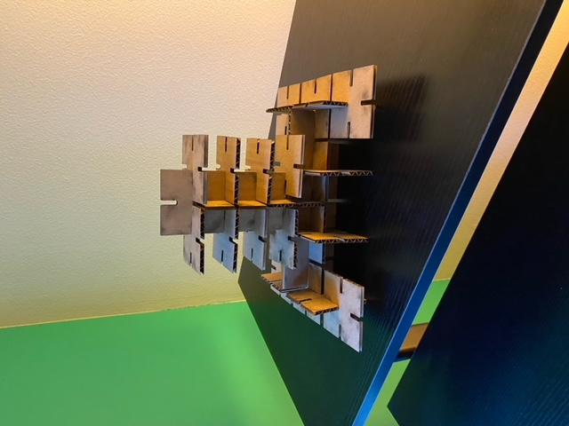
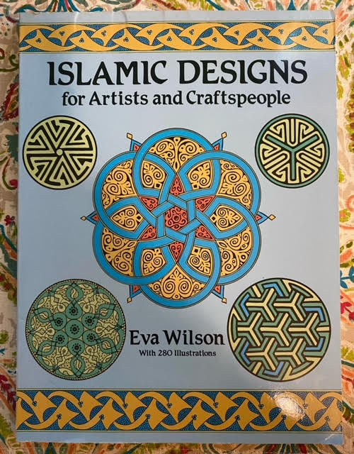
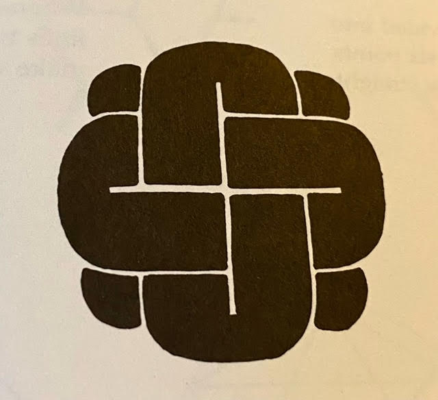
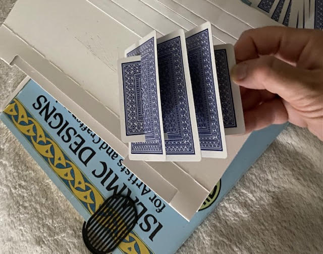
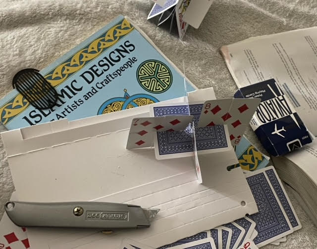

Courtenay's Assignment 1!

The base rectangular object of my final design's dimensions measure 57.7 mm on all sides. I added 4 symmetrical notches on each side, and for a snug press-fit, I rounded the interior and exterior corners of each notch (i.e., the corners closeest to the mid-point of the rectangle and the opening of each notch). It took some trial and error to get there!
My design journey started with some research. I bought this great book last summer from the Talk Story Bookstore on Kauai, Hawaii and took this opportunity to use it for design inspiration!

Initially, thinking about my press-fit goals for this assignment, this design caught my attention:

In lieu of sketching, I used playing cards (having somewhat similar geometric shape/dimensions) to explore how the pieces might intersect when piecing them together into a new form. I quickly discovered some downsides about using playing cards (in lieu of paper or cardboard) to simulate press-fitting: the card texture is stiff and difficult to cut, and the smooth, slippery card surface creates less friction, so press fitting into a new, complex form becomes difficult. I abandoned the playing cards after 10 or 15 minutes of ideation.

Being unfamiliar with computer-assisted design, I watched a tutorial given by our fantastic teaching assistant, Junchao Yang, on how to model objects using Rhino software. Then I prototyped a new rectangular shape in digital form. In my first Rhino model, the shape's notches measured 4 mm in width and 6.36 mm in depth.

Rhino 7 file (first version)
I went to the makerspace to laser print my design and do some testing. Before printing, I had to convert my Rhino file to Adobe Illustrator, reduce the stroke of the closed object to .001 mm, and change the stroke color to bright red so that the laser printer would recognize it.
Adobe Illustrator file
After testing my first 2 laser printed pieces, I found the press fit to be too loose. Back in Rhino, I reduced the width of my notches to 3.5 mm and increased their depth to 14 mm. I re-loaded the Rhino model into Illstrator, adjusted stroke and color settings again, then re-ran testing on the second version of my revised object. This resulted in a snug fit!
Rhino 7 file (second version)